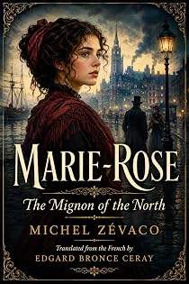

Marie-Rose
The Mignon of the North
by Michel Zévaco · translated by Edgard Bronce-Ceraypar Michel Zévaco · traduit par Edgard Bronce-Ceray
The bookLe livre
Christmas night in Lille: students ringing through the streets, beer-halls streaming with laughter, the theatre open, the concert halls full. At the house of a public prosecutor of the Douai court there is a children's party with a tree, nine o'clock until midnight. On the rue Royale, in the heart of the city, something else is happening.
Nuit de Noël à Lille : les rues sonnant de bandes d'étudiants, les estaminets ruisselant de rires, le théâtre ouvert, les concerts pleins. Chez un procureur de la cour de Douai, on donne une fête d'enfants avec un sapin, de neuf heures à minuit. Rue Royale, en plein cœur de la ville, il se passe autre chose.
From the opening pagesLes premières pages
Marie-Rose
NIGHT OF DRAMA
Lille, that night, was keeping festival: its streets set ringing by bands of students; its beer-halls streaming with laughter; its theatre open, its concert-halls overflowing with spectators… it was Christmas.
At the house of M. Lemercier de Champlieu, public prosecutor attached to the Court of Douai and spending his holidays in Lille, there was a great children's reception—a Christmas tree and a family celebration, from nine o'clock until midnight.
On the Rue Royale, in the very heart of the aristocratic quarter, stood one of those old Flemish town-houses. It was there that the prosecutor lived. Or, at least, it was there that he passed his holidays. His name was Lemercier. But since his marriage to the heiress of the Champlieus, he signed himself Lemercier de Champlieu. The conservative newspaper of Douai, in its reports of the assize courts, called him M. de Champlieu.
Hélène de Champlieu, his young wife, dwelt on the contrary the whole year round in the ancient house on the Rue Royale, which she had brought to the magistrate as her dowry—without counting sizeable estates in the Cambrésis, and without counting, besides, three million invested in State annuities.
Hélène was an orphan. Her mother had been dead these ten years. As for her father, the Marquis de Champlieu, he had succumbed to a stroke of apoplexy three days after Hélène's union with Lemercier.
How had Lemercier—poor enough, without talent, almost ugly—managed to marry the sole heiress to the Champlieu fortune, that girl so ideally beautiful, so truly beautiful that, in the streets, she left behind her something like a wake of admiration? Why did the two spouses live apart, seeing one another only at Christmas, at Easter, and during the long holidays? Such was the twofold problem that the high bourgeoisie and the aristocracy of Lille had striven in vain to solve.
The old Marquis de Champlieu alone, perhaps, might have furnished the key to the mystery; but, if there was a secret, he had carried it with him into the grave. Dead of despair, said some; killed by a hidden shame, whispered others, who went so far as to speak of suicide.
The marriage of Lemercier and Hélène had coincided with a double event to which Lille society had, for that matter, paid only passing attention, but which it is our duty to set down here.
On the eve of the day when the old Marquis de Champlieu gave his consent to that union, there had arrived in Lille a strange and beautiful young woman of seventeen, who was not slow to force her way into the most tightly closed houses. She was remarkable—the black eye, the red lip, the magnificent hair of a fiery gold. She was believed to be Russian, or Polish. She had herself called, quite simply, the Comtesse Fanny. She lived alone with a governess. By the style in which she lived, she must have been immensely rich. Alone, young, without family, she kept men at a distance, and had acquired in a short time a reputation for strangeness, and also for scrupulous honesty.
Here now is the second fact: eight days after the marriage, there vanished from Lille—without anyone's being able to learn what had become of him—a young man by the name of Pierre Latour. He was a painter of great talent, an artist of stature and the hope of the old city which, in every age, had been the friend and generous protectress of the arts. He had just won the second gold medal at the Salon.
Thus, then, the arrival of the Comtesse Fanny—the fair Fanny, as she was soon called—and the sudden, unexplained disappearance of Pierre Latour formed one body, so to speak, with the marriage of Hélène de Champlieu and the prosecutor Lemercier.
Of that marriage, seven months after the ceremony, there was born, before her time, a little girl who was named Marie-Rose, and whom Hélène de Champlieu came to adore—not merely with those treasures of love that lie in reserve in the hearts of mothers, but with a veritable passion, a kind of fierce and exclusive vehemence, as though for her no other affection were any longer possible.
It was the fourth birthday of Marie-Rose that, on this Christmas night, was being celebrated in the house on the Rue Royale. For the child had been born on the twenty-fifth of December.
In the old and sumptuous dwelling of the Champlieus, everything that Lille counted of families notable for wealth or standing had gathered. The house streamed with lights.
Eleven o'clock. The festivity would soon be over. For each family, after putting in an appearance at the prosecutor's, must withdraw to more intimate celebrations of Christmas, and there remained now only a great distribution of gifts to the many little friends of Marie-Rose.
Let us cross, then, the immense drawing-room where a throng of small boys and girls press about a gigantic Christmas tree all covered with toys. And let us pass into the study of M. Lemercier de Champlieu—a vast room richly adorned with a severe bookcase, with a table inlaid with precious brasses, and with hangings dating from the reign of Louis XIV.
Standing before the table, the prosecutor was considering an envelope on which his name had been traced in a fine, cramped hand, all in strokes like the scratchings of a claw. At the summons of the bell he had just pressed, his valet appeared.
"Who brought this letter?" he asked.
"I do not know, sir," answered the servant.
"How does it come to be here? Was it you who set it there?"
"No, sir."
Sternly drilled, the valet answered without permitting himself a single observation; yet it was plain that the presence of this letter, so mysteriously arrived upon the table, caused him an astonishment that bordered upon terror. A gesture sent him out.
The prosecutor sat down. He seized the envelope and, his brows knitted, stared fixedly at it without opening it. He was in evening dress. He was a man of forty, of tall stature, dry and angular, of a bilious complexion, with thin lips and a shifting glance. He gave a shrug of the shoulders and, violently, tore the envelope open. A thin square of Bristol board slipped from it, on which he read greedily a few lines traced in that same clawed hand we have already noted.
"Marie-Rose is not your daughter. Marie-Rose was born at seven months. To surprise your wife's lover, keep watch this evening after the fête. There is no need for anyone to point him out to you. You have seen him but once—yet on one of those occasions the memory of which remains ineffaceable."
The magistrate uttered no cry, made not a single gesture. Only his livid face flushed with gall. He read it a second and a third time, and mechanically he undid his white cravat, wrenched away the stud that held his collar. Then he drew breath, with a long and rasping sigh. A frightful suffering convulsed the features of his face, and his eyes, ordinarily glassy, turned bloodshot.
"It is true!" he growled. "It cannot but be true!… Hell! why must I suffer so?… Do I love her, then?… Madman! Have I gone and begun to love her?… Ah, how I suffer!… To hold them… the two of them… there… under my hand! To avenge myself—oh, to avenge myself!… I want—oh, I want it to be frightful!…"
The excerpt ends here — about 1,243 words of the published edition.L'extrait s'arrête ici — environ 1,243 mots de l’édition parue.
KindlePaperbackBrochéContextContexte
Zévaco was a schoolmaster, then a cavalry officer, then an anarchist journalist who fought duels over his editorials and went to prison for his convictions. He came to the novel in his forties and conquered it at once: from 1900 his serials ran in the great Paris dailies and were read by millions. Sartre, remembering his childhood in Les Mots, called him a writer of genius. He has been read in Persian, Turkish, Arabic, Romanian and Spanish. In English, for more than a century, he was effectively unavailable. The Zévaco Project is the first attempt ever made to translate his complete novels — one volume at a time, until the canon is closed.
Zévaco fut maître d'école, puis officier de cavalerie, puis journaliste anarchiste — un homme qui se battait en duel pour ses éditoriaux et fit de la prison pour ses convictions. Il vint au roman passé la quarantaine et le conquit aussitôt : à partir de 1900, ses feuilletons paraissaient dans les grands quotidiens parisiens et se lisaient par millions. Sartre, se souvenant de son enfance dans Les Mots, le tenait pour un écrivain de génie. On l'a lu en persan, en turc, en arabe, en roumain, en espagnol. En anglais, pendant plus d'un siècle, il fut pratiquement introuvable. Le Projet Zévaco est la première tentative jamais faite de traduire son œuvre romanesque complète — un volume après l'autre, jusqu'à la clôture du corpus.
The whole programmeTout le programme